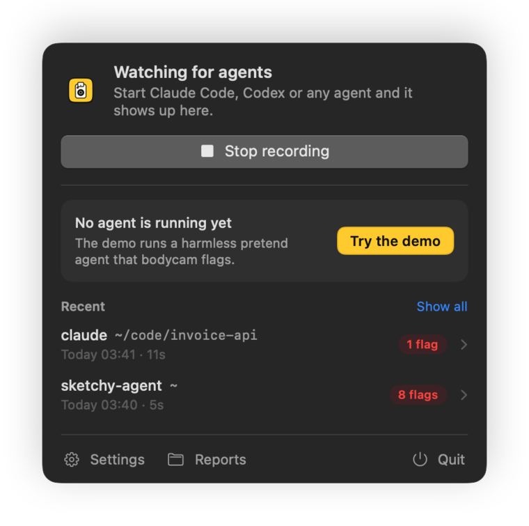
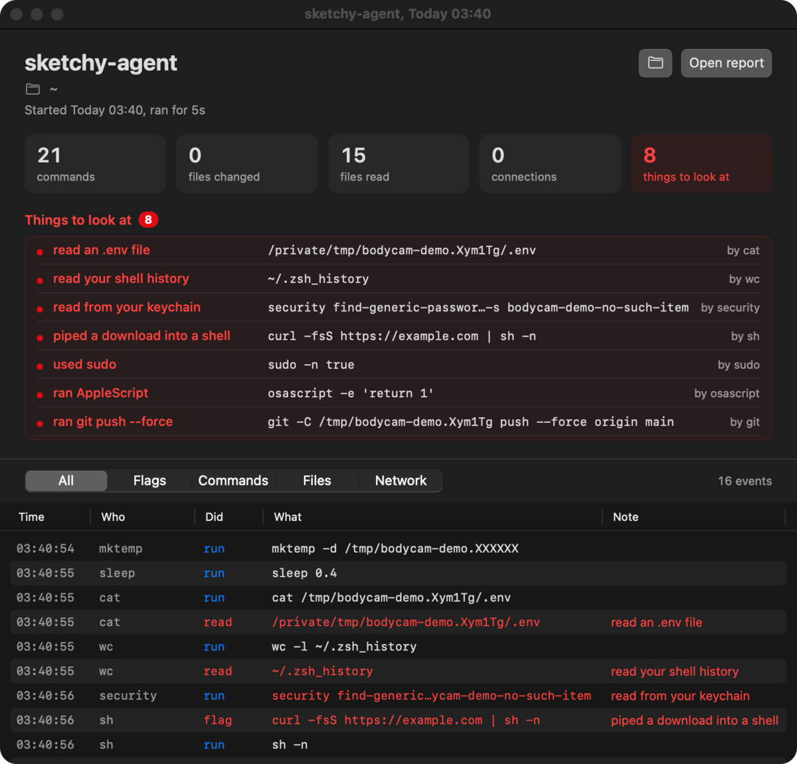

.env, and bodycam shows it running the tests, reading .env and editing src/config.js.In your menu bar
The app records every agent you start, in a terminal or anywhere else. Its light turns red while one runs, and you get a notification when an agent reads a secret or changes your setup.

Each run gets a window with its flags and a timeline you can filter by flags, commands, files and network.
Or with Homebrew: brew install --cask omlahore/tap/bodycam-app
The app isn't notarized yet, so the first time you open it, go to System Settings > Privacy & Security and click Open Anyway. When you start recording it asks you to turn it on in Full Disk Access, which Apple requires for any app that reads Endpoint Security events.

What it flags
Most of what an agent does is ordinary. bodycam lists all of it in the report and calls out only these.
- Secrets it reads
- SSH private keys
- AWS, Google Cloud, Azure, Kubernetes and Docker credentials
- token files like
.npmrc,.netrcand the GitHub CLI's .envfiles- the keychain
- browser data
- Messages, Mail, 1Password and Bitwarden data
- shell history
- Changes to your setup
- shell startup files like
.zshrc - launch agents and daemons
- SSH keys and
authorized_keys - your git config
- files in
/etc - commands installed into your PATH
- apps in
/Applications
- shell startup files like
- Risky commands
sudo- piping a download into a shell
- reading passwords with
security launchctlandcrontab- AppleScript
- force pushes
- publishing packages
- removing a quarantine flag
- turning off Gatekeeper or SIP
ncchmod 777rm -rfon your home folder
- Things left behind
- background items it registers
- processes still running after it exits
A tool reading its own credentials is listed, not flagged. When gh reads its token, or Claude Code reads its login from the keychain, the report puts that under its own heading.
How it works
bodycam reads Apple's Endpoint Security events through eslogger, which comes with macOS. It starts your agent, follows it and every process it starts, and keeps only their events: programs run, files opened, written, renamed and deleted, and background items registered. Everything else is dropped as it arrives.
Endpoint Security has no event for network connections, so bodycam checks the agent's open TCP connections with lsof every 2 seconds. It also lists the hosts named in commands like curl and git.
When the agent exits you get a summary in the terminal, and the full report is saved to ~/Library/Logs/bodycam as a Markdown file. Values that look like keys or tokens are masked, so you can share a report.
Nothing gets installed and nothing keeps running in the background. Reports stay on your Mac.
# bodycam: claude, 16 Oct 2026 01:48
- Project: `~/code/invoice-api`
- Ran: 01:48:02 to 01:48:12 (11s)
## Things to look at
- read an .env file: `.env` (×6, by node, claude, bat)
## Files changed in the project (1)
- `src/config.js`
## Credentials read by the tools they belong to
- your keychain, by security, claude
- your npm token file, by node
What it can't see
- Network connections are sampled every 2 seconds, so a very short one can be missing.
- Keychain access through Apple's API isn't flagged.
- When events arrive faster than bodycam reads them, macOS drops some. The report says when that happened.
- It records what an agent does. It doesn't stop it. To block things, use your agent's permission settings or a sandbox.
- It only works on macOS 13 or later.
Not on a Mac? AgentSight watches AI agents on Linux, and Aegis does it on Windows.
Questions
Why does it need my password?
bodycam reads events through Apple's eslogger, which only runs as root. bodycam claude asks for your password once to start eslogger, and runs the agent itself as you, not as root. If macOS still won't let it read events, give your terminal app Full Disk Access in System Settings > Privacy & Security, then open a new terminal window.
Does it send my data anywhere?
No. Reports are saved to ~/Library/Logs/bodycam and never leave your Mac. There's no account and no telemetry.
Which agents does it know?
Claude Code, Codex, Gemini CLI, Cursor CLI, Aider, OpenCode, Amp, Crush, Qwen Code, GitHub Copilot CLI, Droid and Kiro. To record anything else, start it through bodycam the same way, with its command name in place of claude.
Is it free?
Yes. bodycam is open source under the MIT license.